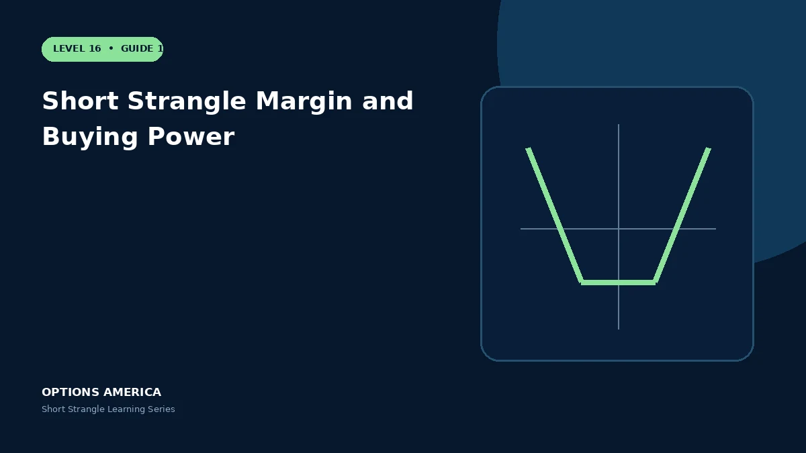

Plan for changing margin, volatility stress and correlated portfolio exposure before opening an undefined-risk strangle.
Requirement inputs
Brokers consider underlying price, strike distance, premium, volatility and account permissions. Standard and portfolio-margin accounts can calculate very different amounts.
Tested-side expansion
A move toward the call or put can increase intrinsic and risk exposure while IV rises. Margin may expand at the same time the trade loses.
Portfolio concentration
Several strangles can appear diversified but share market beta and volatility risk. A broad shock can test many puts and reduce buying power together.
Capital reserve
Keep enough reserve for a stressed price gap, higher volatility and orderly closure. Size from worst credible portfolio scenarios rather than the credit-to-margin percentage.
A practical example
A strangle opens using $3,500 of buying power. After a market decline and IV spike, the requirement reaches $7,000 while the position needs cash to close or adjust.
This simplified scenario focuses on selected outcomes; live prices and risks will differ. Live option prices also reflect the underlying price, time decay, rates, dividends, liquidity and transaction costs. Greeks are theoretical estimates, not guarantees.
Build a risk-first trading plan
Before using short strangle margin and buying power, record the stock price, put and call strikes, expiration, total credit and contract multiplier. Calculate both breakevens, then estimate dollar loss beyond them under upside and downside gaps. A wide strike range improves the starting room but does not define either tail.
Stress several prices, time points and volatility levels, including a skew change that affects the put and call differently. Review delta, gamma, theta, vega and buying power for the complete portfolio. Multiple OTM positions can become tested together during a common market shock.
Define a profit target, maximum tolerated loss, tested-side trigger, margin reserve and latest exit date before entry. Decide whether an event is intentionally included and how assignment would be handled. Use multi-leg orders and confirm quantities after every fill, roll or partial close.
Document the result after exit, including slippage, assignment effects and the largest intraday exposure. Comparing the original forecast with the actual path helps distinguish a sound process from a lucky outcome and improves later strike, duration, margin-reserve and position-size choices under similar market conditions.
Frequently asked questions
Can margin double?
It can change substantially.
Is premium yield a complete metric?
No.
Why stress the portfolio?
Correlated positions may move together.
Continue the Short Strangle cluster
Explore related guides: How to Adjust a Short Strangle · How a Short Strangle Works · Short Strangle vs Covered Strangle. For a structured sequence, use the free Level 16 – Short Strangle course.
Options involve risk and are not suitable for every investor. This material is educational and is not investment, tax or legal advice. Greeks are theoretical estimates, and contract terms and broker requirements can vary.